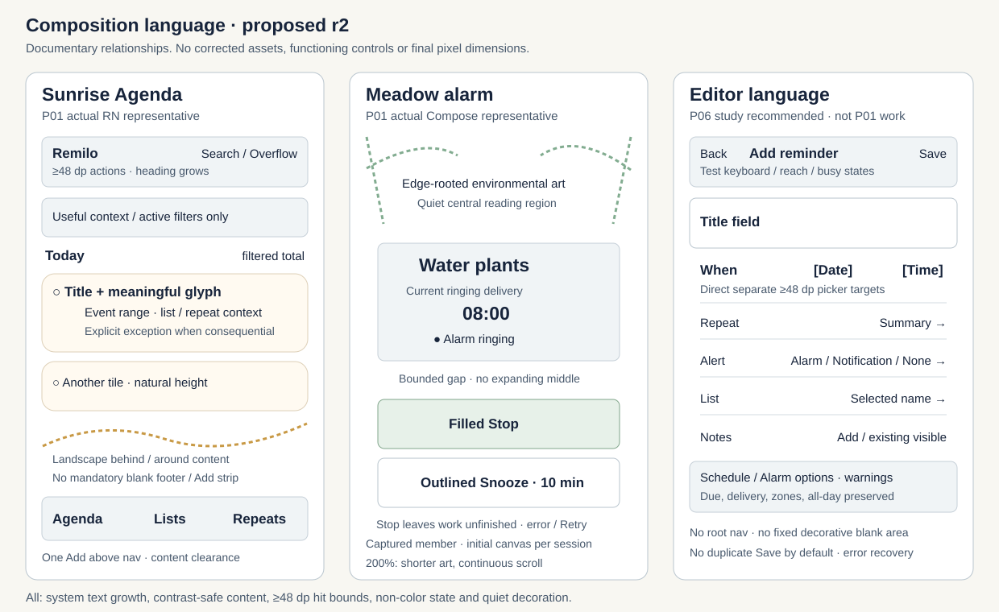
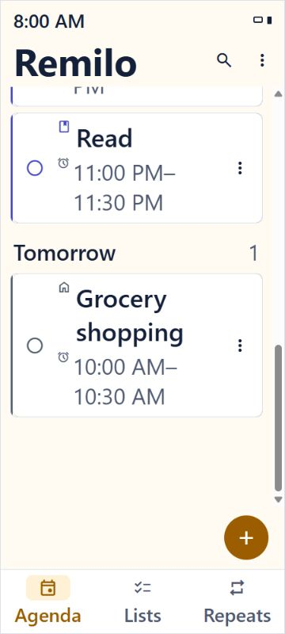
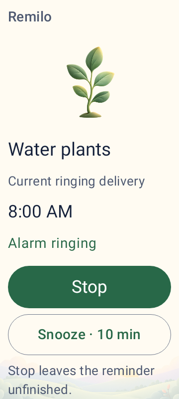

A coherent illustrated UI, from cards to controls
Rounded, quietly separated reminder tiles; deliberate typography and spacing; compact aligned headers; approachable forms; one integrated alarm composition. Environmental art supports this whole UI language.
r1 was not accepted. This revision preserves its inputs/evidence and adds the owner's artwork-only checkpoint. Actual corrected RN/Compose comparisons remain a later gate.
UI languageIllustration language19 pattern evaluations + researchExact revisionOwner correction
Agenda · the whole screen must improve
Reference and current images are displayed at equal 180 px width with preserved aspect ratio. The reference has 9:00 and different tasks; the controlled current fixture is 08:00 on 6 October 2026, America/Los_Angeles. These content differences prevent a direct visible-row-count comparison.
227×522 from 1312×1199 board

Attributed 20ea024 host baseline

Meadow alarm · scenery and actions form one sequence
The desired crop is 165×310 with a 9:30 AM reference label. The current controlled delivery is 08:00; Compose is actual native UI rendered by Robolectric, not a phone capture.
Unmodified 165×310 crop

Attributed 20ea024 host baseline

Editor · a primary visual input, with later workflow ownership
228×438 from 1536×1024

Current production code audit
Existing top-right Save, summarized Repeat, three-mode Alert and List rows are useful.
Timed When opens date → time, even for a time-only change. Unused Notes is always a multiline field.
No new production-editor capture or corrected editor render is claimed. Existing review editor examples are not production workflow proof.Proposed layout relationships
This diagram explains hierarchy and constraints. It is documentation, not generated artwork or an actual component screenshot.

Decisions carried forward
| Classification | Pattern and recommendation | Boundary |
|---|---|---|
| Adopt / adapt | Rounded cards, compact headers, meaningful icons, coherent type/spacing, group counts and environmental personality. | Real semantics, ≥48 dp targets, scalable text and composite contrast. |
| Adapt | Chips represent real filters; labeled roots remain. Notes collapses only when unused; existing notes are visible. | P05 navigation / P06 editor production. |
| Investigate | Completion: immediate pending feedback, confirmed check/removal, revision-safe Undo. Save placement and Alert alternatives need workflow trials. | Optimistic persistence/animation internals are not established by app help pages. |
| Adapt / reject | Native notification text/actions and brand icon; no custom pastel banner clone. No unexplained alarm X/overflow. | Android 12+ template/OEM limits; native authority/privacy retained. |
| Adopt / adapt | Named swatches, visible selected check, radio subtitles, clear independent brightness/palette/policy groups. | P04/P09/P10/P11. No weather, Daily mix or extra palette catalog. |
Full pattern-by-pattern reasoning and primary-source research
Large text is a composition requirement
Fixed header clips; scene disappears


Fixed sprig allocation remains


Approval sequence · three distinct design gates
1 · Refined specification
Approve the exact r2 bundle: illustration + UI language, pattern decisions, diagram and board. Open workflow decisions remain bounded and documented.
2 · Artwork-only style
Then generate two Meadow and two Sunrise candidates initially. Review standalone art, source references and crop/quiet regions; accept identified sources before UI integration.
3 · Actual rendered UI
Integrate only selected Meadow/Sunrise compositions into actual RN/Compose review components. Review complete screen comparisons, responsive/dark matrix and accessibility findings.
Scope and handoff
Two non-shipping screens. P02 receives only accepted material after P01 closure. No other milestone, production workflow, installation or theme catalog generation is included.
Original boards · open for full-resolution inspection
Immutable baseline manifest · Archived r1 brief · Historical r1 board · Refinement evidence and limitations